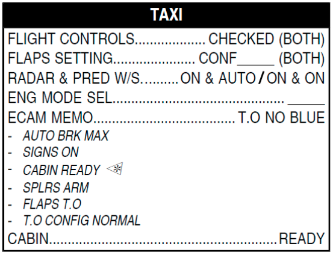
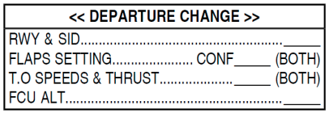

1. FULL UP, FULL DOWN, until full deflection
2. FULL LEFT, FULL RIGHT, until full deflection
3. With PEDAL DISC -> RUDDER LEFT, RIGHT, slowly, until full deflection
- Heavy Rain
- Standing water on runway
- Heavy rain or severe turbulence is expected after takeoff
- If fair weather, TERR on PF and WX on PM
- If bad weather, WX on PF and TERR on PM

You can start taxiing now.
BRAKE CHECK: Do it at the beginning of taxi. Pressure should be 0 to ensure Main Braking System has taken over Alt Braking System.
Some other considerations:
- Operate THR LEVERS near idle for at least 2 minutes from ENG START to ensure propper warmup (Monitor CLOCK CHR).
- Aircraft is correctly aligned when centerline is lined-up between PFD and ND.
- The brakes heat up quickly! Make sure you don't go too fast so you use the brakes as little as possible.
Taxi speeds:
- 20-30 kts for straight taxi
- 10 kts for turns
- For a 180º turn on a runway, keep 5~8 kts, and at least 30m width (98 feet) are needed.
1. Tell ATC you need some time to operate MCDU, you need to stop, they will tell you where. Set PARK BRK.
2. Modify the MCDU F-PLN, CSTR, E/O SID, then FUEL PRED and Takeoff PERF.
3. Perform new departure briefing.
